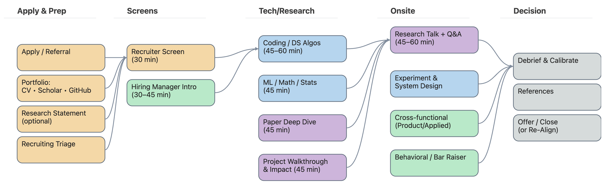

Research Scientist Interview Guide
Research Scientist Interview Guide

Overview
This guide outlines a comprehensive and practical preparation strategy for Research Scientist interviews across academia, FAANG research labs, applied ML groups, and frontier model companies (OpenAI, DeepMind, Anthropic, NVIDIA, Meta FAIR). It blends real-world expectations from hiring managers with the lived experience of preparing for and interviewing with research teams.
| Resource | Link |
|---|---|
| Research Scientist | Preparation Guide |
| Data Science | Data Science Notes |
| Statistical Learning | Statistics Notes |
| LLM Curriculum | AI Agents Guide |
1. Why AI Research Interviews Are Different
Research hiring revolves around one core question:
Can you take an ambiguous problem and turn it into a clear idea, an experiment, a result, and an impact?
To answer this, interviewers probe six major capabilities:
Research depth
Can you clearly explain the gap, the idea, the method, the evidence, and the limitations of your work?Technical foundations
Math, ML, optimization, probability, RL, uncertainty modeling, transformers, and systems fundamentals.Experimentation mindset
How you design baselines, run ablations, debug failures, reason about data, and measure uncertainty.Systems thinking
How your ideas turn into deployed systems—latency, reliability, guardrails, monitoring, drift, and safety.Execution
Can you scope, prototype, iterate, debug, and deliver—papers, code, and production impact?Communication
Can you explain complex ideas clearly to engineers, PMs, research peers, and leadership?
For each project, try this lens:
problem → gap → idea → method → evidence → limitations → next steps → impact
2. What the Interview Process Looks Like
Most AI research interview loops have a similar skeleton:
Recruiter / Hiring Manager Screen
Scope, research fit, background, interests, and communication.Technical Screen
ML fundamentals, math, and a coding round (usually Python).Research Deep Dive
A long-form discussion of your best project: motivation, choices, experiments, failures.Research Talk / Seminar (45–60 minutes)
A slide-based talk to a mixed audience (researchers, engineers, PMs).Systems / Experimentation Round
Design and evaluation: metrics, baselines, guardrails, safety, reliability.Behavioral / Team Fit
Ownership, collaboration, scientific judgment, decision-making under uncertainty.Debrief & Calibration
Cross-interviewer discussion → final decision → offer or no offer.
3. Phase 1 Interview Preparation Roadmap
Preparing for a research scientist role isn’t a weekend sprint. The plan below assumes ~100 days (around 14–15 weeks) of disciplined, focused preparation. Think of it as 10 phases (≈10 days each), grouped into larger thematic blocks.
#100DaysofPreparation
3.1 (Weeks 1–2) Build Your Research Portfolio Foundation
Goal: Establish your scientific identity and core artifacts.
What to accomplish:
- Select 2–3 flagship projects — the ones you want to be hired for.
- Write one-page summaries for each:
- problem → gap → idea → method → evidence → limits.
- Organize code, plots, logs, notebooks, and experiment sheets into a clean structure.
- Refresh foundational ML math:
- Gradients, softmax, cross-entropy
- Bias–variance tradeoff, generalization
- Regularization basics (weight decay, dropout)
- Review optimization basics:
- SGD, AdamW
- Learning rate warmup, cosine decay
- MLE vs. MAP
- Do light DS&A:
- 20–30 minutes/day on arrays/strings, hash maps, basic trees.
Outcome: A clear, coherent scientific story and crisp articulation of your contributions.
Follow-along tasks:
- Create a Portfolio/ folder and write 3 one-page project summaries.
- List your 5 strongest experimental results (with metrics and context).
- Summarize 3 papers from your target teams (FAANG, DeepMind, OpenAI, Anthropic, etc.).
3.2 (Weeks 3–4) Deep Learning & Modern Architectures Refresh
Goal: Regain fluency in the architectures that power modern AI systems.
Topics to review:
- CNNs, RNNs, LSTMs, GRUs
- Transformers: attention, QKV projections, multi-head attention
- Residual connections, LayerNorm, normalization strategies
- KL divergence, entropy, cross-entropy
- Positional encodings, rotary embeddings (RoPE)
- Regularization techniques: dropout, mixup, cutmix, label smoothing
- Training dynamics:
- Gradient flow
- Vanishing/exploding gradients
- Loss landscapes, sharpness, generalization behavior
Follow-along tasks: - Re-derive softmax + cross-entropy and their gradients. - Solve 10 small gradient/optimization exercises. - Summarize 3 internals of transformers (e.g., QKV, attention, layer norm) in your own words.
Hands-on:
- Rebuild a transformer encoder from scratch in PyTorch (minimal but clean).
- Implement vision augmentations (random crop, flip, color jitter).
- Reproduce a small-scale paper result (e.g., CIFAR-10 or MNIST baseline).
Outcome: You should be comfortable answering: “How does this model actually work?” instead of just “It’s a transformer.”
3.3 (Weeks 5–6) Deep Reinforcement Learning Refresher
Goal: Achieve deep, working-level confidence with modern DRL.
Core topics:
- Derive the policy gradient theorem from first principles.
- Understand Generalized Advantage Estimation (GAE) and why it stabilizes training.
- Build intuition for PPO and TRPO:
- Clipped objective
- Trust regions
- KL constraints
- Master key off-policy algorithms:
- DQN, TD3, SAC
- When to use which (discrete/continuous, exploration needs).
- Replay buffers, target networks, delayed policy updates.
- Exploration vs exploitation in discrete and continuous settings.
- Diagnosing RL instability:
- Value drift
- Entropy collapse
- Mis-scaled advantages
- Reward hacking
- Safety-aware RL:
- Constraint handling, shields, penalties
- Reachability logic basics
- Offline RL fundamentals:
- Dataset coverage
- Behavior policies
- Distributional shift
- Counterfactual evaluation and why it matters in safety-critical systems.
Follow-along tasks:
- Write out the PPO objective and update rule by hand, including clipping, advantage, and entropy terms.
- Implement PPO or DQN from scratch in PyTorch (keep it minimal but readable).
- Re-derive the REINFORCE update starting from log-likelihood gradients.
- Write a one-paragraph explanation of what causes PPO instability and how you’d detect it.
- Read two recent RL papers from your target teams.
- Train a simple RL agent:
- CartPole, or
- A domain-specific environment like OpenDSS/CityLearn.
- Study 2–3 DRL papers closely related to your dream role.
Outcome: Confidently explain, derive, implement, and debug modern RL algorithms and discuss where they fail.
3.4 (Weeks 7–8) LLMs, RAG, Multimodal Systems, Prompting & Finetuning
Goal: Build a strong working mastery of LLMs and the surrounding ecosystem.
Topics:
- Pretraining vs finetuning vs RLHF vs instruction tuning.
- Parameter-efficient finetuning:
- LoRA, QLoRA, PEFT.
- Tokenization:
- BPE, SentencePiece basics.
- Diffusion models:
- Key intuition (noise schedule, denoising).
- RAG systems:
- Chunking strategies
- Vector search and indexing
- Reranking
- LLM evaluation:
- Exact match, BLEU, nDCG
- Win-rate and human eval
- Safety:
- Hallucination mitigation
- Safety filters, prompt defenses
- Knowledge distillation for LLMs.
- Multimodal encoders (CLIP-style), contrastive learning.
- Vision metrics:
- mAP, IoU, retrieval (k?).
Hands-on tasks:
- Play with prompt engineering and basic tool calling.
- Build a minimal RAG pipeline using a public dataset.
- Finetune a small model (e.g., Mistral-7B, Qwen-2B or similar).
- Evaluate retriever quality using recall@k or nDCG.
- Summarize one frontier LLM paper (OpenAI, Anthropic, DeepMind, etc.).
- Create 5 “hallucination test” prompts and inspect failure cases.
Outcome: Can talk about LLMs as both a research topic and a system you can build and debug.
3.5 (Weeks 9–10) AI Safety, Alignment & Responsible AI
Goal: Develop a rigorous understanding of safety and alignment principles used in modern labs.
Topics:
- Alignment foundations:
- Outer vs inner alignment
- Goal misgeneralization.
- Deception risks and model monitoring.
- Red teaming and adversarial prompting.
- Guardrails & safety filters (moderation models, policy layers).
- Interpretability:
- Saliency
- Probing
- Causal scrubbing (intuitively)
- Robustness & adversarial attacks.
- Reward hacking & specification gaming.
- Responsible deployment and incident response.
Hands-on tasks:
- Evaluate an LLM for hallucination and unsafe completions.
- Build a small safety classifier (e.g., toxicity or PII detection).
- Implement simple adversarial prompts to test robustness.
- Summarize 2–3 alignment papers from DeepMind / OpenAI / Anthropic.
Outcome: Can speak maturely and concretely about safety, alignment risks, and mitigation strategies.
3.6 (Weeks 11–12) ML Systems, Experimentation Design & Infrastructure
Goal: Understand how research artifacts turn into production-grade systems.
Topics:
- Data-centric AI:
- Data pipelines, labeling strategies, noise.
- Feature engineering vs representation learning.
- Constraints:
- Latency, throughput, cost.
- Monitoring:
- Drift, anomalies, reliability SLOs.
- Guardrails:
- Fail-open vs fail-safe
- Circuit breakers
- Fallback heuristics.
- Shadow vs online experimentation.
- Key metrics:
- Product KPIs ↔︎ technical metrics
- OOD splits, fairness audits.
- Reliability:
- Rollback plans, incident runbooks.
Hands-on tasks:
- Design a deployment plan for a real ML model (e.g., anomaly detection, RAG, recommender).
- Build a small drift-detection pipeline.
- Write a full ML system design doc (data → model → eval → rollout).
- Evaluate at least 3 slices of a dataset: OOD, rare cases, edge cases.
Outcome: Can walk through a complete “research to production” story with credible detail.
4. Phase 2 (Weeks 13–14): Research Talk, Deep Dives & Scientific Communication
Goal: Prepare the single most important artifact in the interview loop—your research story.
Activities:
- Build 30, 45, and 60-minute versions of your talk.
- Use a clear slide ratio:
- Motivation (10%)
- Problem + Gap (10–15%)
- Method (35%)
- Results (40%)
- Limitations (10%)
- Create:
- 3 strong ablation stories
- 1 negative result you can explain with maturity.
- A “failure case” slide.
- Write a single-sentence thesis for your talk.
- Do at least one dry run alone (no audience).
- Prepare 25–30 deep-dive technical questions you might be asked.
- Derive your core equation/algorithm on paper (e.g., loss function, policy update).
Mock sessions: - Give your talk to peers/mentors. - Ask for aggressive Q&A (poke at assumptions, data choices, evaluation). - Do a full “paper walkthrough” session, slide by slide or section by section.
Outcome: Can defend your work with clarity, honesty, and scientific maturity, including what didn’t work.
5. Phase 3 (Week 15): Behavioral Mastery (STAR-L)
Goal: Show leadership, ownership, and judgment—not just equations.
Use STAR-L: > Situation → Task → Action → Result → Learning
Prepare stories for: - A failure you owned and learned from. - A conflict you resolved or navigated. - Working under ambiguity. - Mentoring or unblocking someone. - Leading without formal authority. - A data-quality disaster. - A roadmap change after a major negative result.
Follow-along tasks:
- Write 10 STAR-L stories.
- Practice two-minute delivery for each.
- Record a mock behavioral round (audio or video).
- Identify your “superpower” and your “growth edges” as a researcher.
5.1 Final Polish & Company-Specific Tuning
Goal: Finish the cycle aligned, sharp, and confident.
What to finalize:
- 30/45/60-minute talk versions.
- Deep dive answers for your top 2–3 projects.
- One-page project summaries.
- A set of 10 questions for each interviewer type (researcher, MLE, PM, HM).
- A 60-second elevator pitch about who you are as a researcher.
- A mock onsite simulation: >Talk → technical → systems → behavioral.
Follow-along tasks: - Study 3–5 papers from the target team. - Align one slide in your talk to their mission/charter. - Prepare a “What I can deliver in 6 months” slide or talking point. - Design your Interview Day game plan: - Sleep, food, breaks, notes, mindset.
Closing Note
This 15-week, ~100-day preparation cycle is not just about surviving interviews. It is about becoming a clearer thinker, stronger experimenter, better systems designer, and more confident communicator—the kind of researcher who can walk into any environment and add value quickly.
Recommended resources
- Papers: recent NeurIPS/ICLR/ICML tracks relevant to the team; read 2–3 team papers.
- Books: Designing Machine Learning Systems (Huyen), Deep Learning (Goodfellow), ESL (HTF), Probabilistic ML (Barber/Murphy).
- Practice: LeetCode medium sets; pair-program ML design prompts; mock talks.
Potential Questions to Practice (Post-Guide Add-On)
Even after a full preparation cycle, the most critical skill is being able to reason aloud under pressure. These are high-signal prompts—exactly the kind you’ll face in research loops at FAANG labs, DeepMind, OpenAI, Anthropic, NVIDIA, and applied ML teams. Use them for mock interviews, daily drills, or deep-dive rehearsals.
1. Research Narrative Questions
These assess your clarity, causality, and scientific maturity.
- What was the original problem motivation, and what gap in prior work did you identify?
- If someone tries to reproduce your paper, what is the first place they might get stuck—and why?
- What is the core equation behind your method? Derive it.
- How did you choose hyperparameters and baselines? What alternatives did you reject, and why?
- What was your strongest ablation and the most surprising negative result?
- What are the three biggest assumptions in your work? How do they impact generalization?
- Explain one design decision that turned out to be wrong. What did you learn?
- If you had 3 more months, what experiment would you run first?
2. Machine Learning Fundamentals
- These evaluate foundations beyond “tool usage.”
- Explain bias–variance tradeoff using a real ML experiment you ran.
- Why is cross-entropy the default classification loss? What are its weaknesses?
- Explain the difference between calibration and accuracy.
- When does AdamW outperform Adam? When does SGD outperform both?
- Why does label smoothing help? When can it hurt?
- Walk me through how LayerNorm works and what problem it solves.
- Derive the gradient of softmax + cross-entropy.
- What makes a metric robust? Give an example from your work.
3. Deep Learning & Transformers
- You should be able to explain these without jargon.
- How does self-attention scale? What is the bottleneck?
- Why does RoPE (rotary embeddings) help at long sequence lengths?
- Compare MLP layers in transformers with convolutional layers.
- How do you detect and fix attention drift or instability?
- What are the differences between pretraining, SFT, RLHF, and DPO?
- When would you prefer LoRA to full fine-tuning? When not?
4. Reinforcement Learning / Control
Very common for robotics, energy, and autonomy research teams.
- Derive the policy gradient theorem.
- Explain GAE and how it stabilizes PPO.
- What causes PPO instability? Diagnose this using logs.
- Compare TD3 vs. SAC—where does each shine?
- What’s your exploration story? What happens if it collapses too early?
- How do you enforce safety constraints in RL?
- Design an experiment to detect reward hacking.
- Why is offline RL difficult? What are the common failure modes?
5. LLMs, RAG, and Multimodal Systems
These appear in GenAI-focused interviews.
- How do you design chunk sizes for RAG?
- Evaluate retriever quality using recall@k and nDCG—what’s the difference?
- What are the typical root causes of hallucination?
- Explain instruction tuning vs. alignment.
- When would you use a reranker?
- How do you design a guardrail for a safety-critical RAG pipeline?
- What does it mean for an embedding model to be anisotropic?
6. Experimentation, Evaluation & Systems Thinking
These questions separate strong researchers from average candidates.
- What is the minimum viable baseline for your task?
- How do you know if your improvement is statistically meaningful?
- How do you test for OOD generalization?
- Propose a slicing strategy for your dataset.
- Design a drift detection pipeline for a production model.
- Explain guardrails in the context of ML systems.
- How would you deploy a model that is correct but unstable?
7. Behavioral / Scientific Judgment
These should follow STAR-L.
- Tell me about a time your experiment invalidated your entire roadmap.
- Describe a major failure—what did you learn?
- Describe a conflict in a research collaboration and how you resolved it.
- Tell me about a time you mentored someone technically.
- When did you choose scientific rigor over speed? When did you choose speed?
- Describe a risky research bet you made. How did it turn out?
8. Extremely High-Signal “Bar Raiser” Questions
These often decide the offer.
- What is your strongest research intuition?
- What’s a problem you won’t solve with deep learning?
- What is one idea you believe is true but is not proven yet?
- Teach me the main idea of your method in 20 seconds.
- If I remove 80% of your training compute, what breaks first?
- If you were in charge of this team, what would you prioritize for the next 6 months?
9. Practical Coding / ML Engineering Prompts
Not LeetCode—real ML-adjacent coding.
- Implement a basic dataloader with batching and shuffling.
- Write a PyTorch forward pass for an MLP with dropout.
- Implement multi-head attention step-by-step.
- Write vectorized NumPy code to compute cosine similarity.
- Implement prioritized replay sampling.
- Build a simple streaming anomaly detector.
- Given a log file with rewards and losses, produce summary diagnostics.
10. Lightning-Round “Explain in Plain English” Prompts
A favorite of FAANG research interviews.
- What is KL divergence?
- What does entropy measure?
- What is overfitting, really?
- Why does normalization matter?
- What is a confidence interval?
- Why is drift dangerous?
- What is a reward function in one sentence?
- Why do we need baselines?